⇦
⇦
2025-10-17
Action shot:
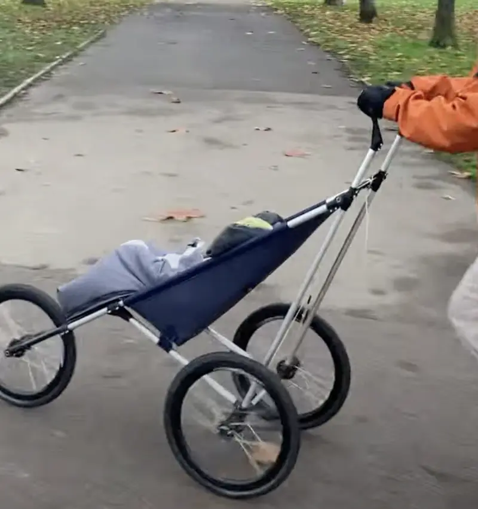
I built a jogging buggy for our first daughter. I was considering buying a Thule, but fancied making something more lightweight/techy - my original plan was to sell them to other dumb weight-weenie parents, but certifying it would cost around £10k - maybe one day.
This post is a vague how-to with some lessons-learned. I'm not sure there's much value in anything more detailed.
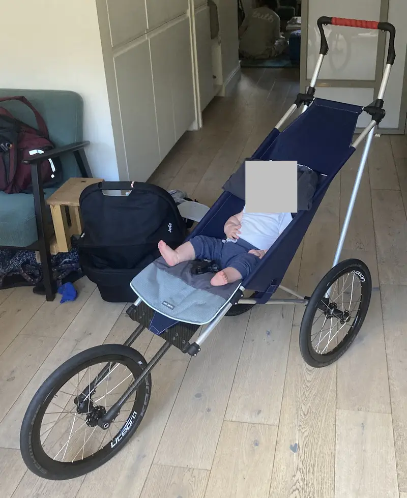
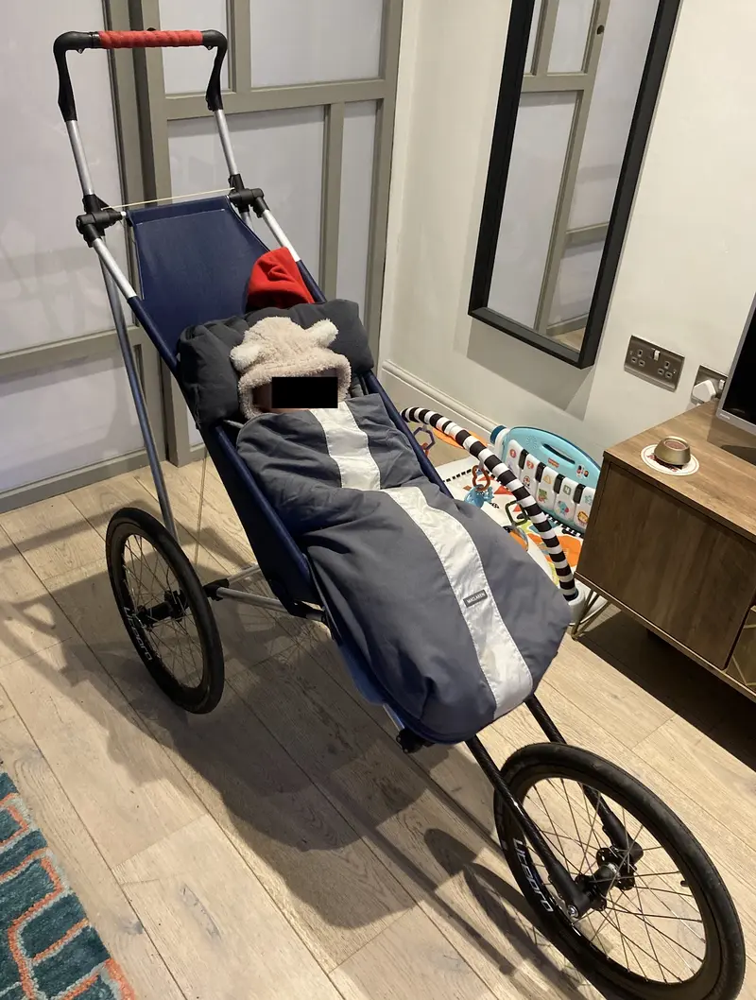
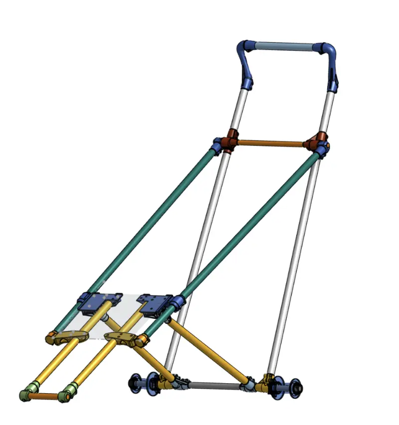
I used onshape - I've used various bits of mech-eng CAD software in my life, onshape works in the browser and is seriously impressive. At time of writing, it's free if the designs are kept public and there's infinite YouTube videos on how to use it.
I used 3DPRINTUK (Leyton based, quick, Ingerlandddd) and JCLPCB (slower, cheaper). The prints are all in MJF PA11-HP Nylon and seem plenty strong.
The tubes are various diameters of 6081 Aluminium from metals4u. The forks are carbon, for added bling.
The inanimate carbon plate is precut 4mm carbon fibre from hyperdrivecarbon (they can cut to size on request), I drilled the holes with a normal metal drill bit.
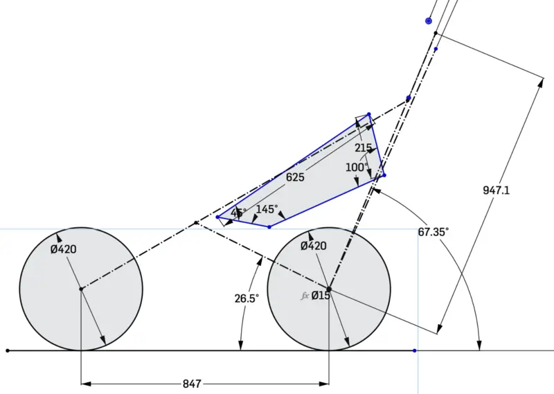
So I didn't have to think too hard about geometry/balance, I drew over the side-on drawing of an existing buggy, then adjusted where I saw fit. The final frame looks like:
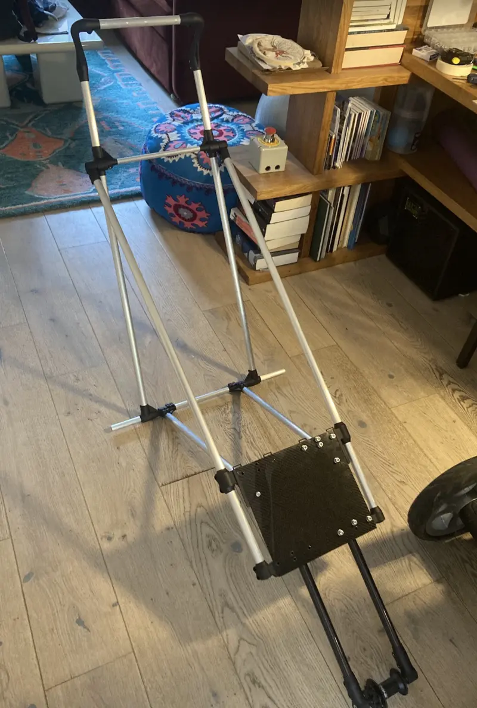
I did a first "form finding" rough take of the fabric section in spare ripstop.
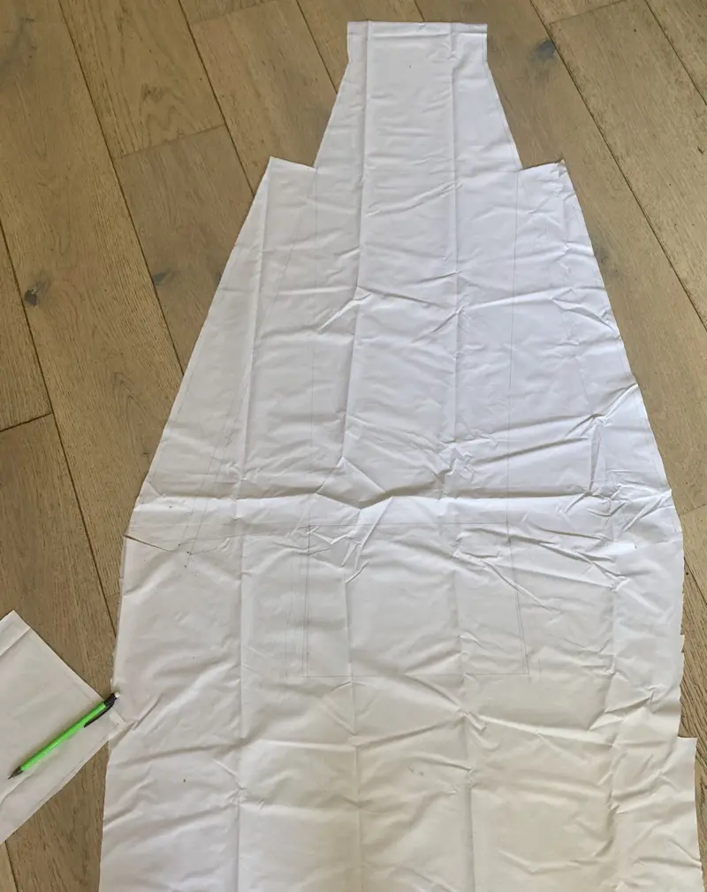
Then I measured from that for the final dimensions.
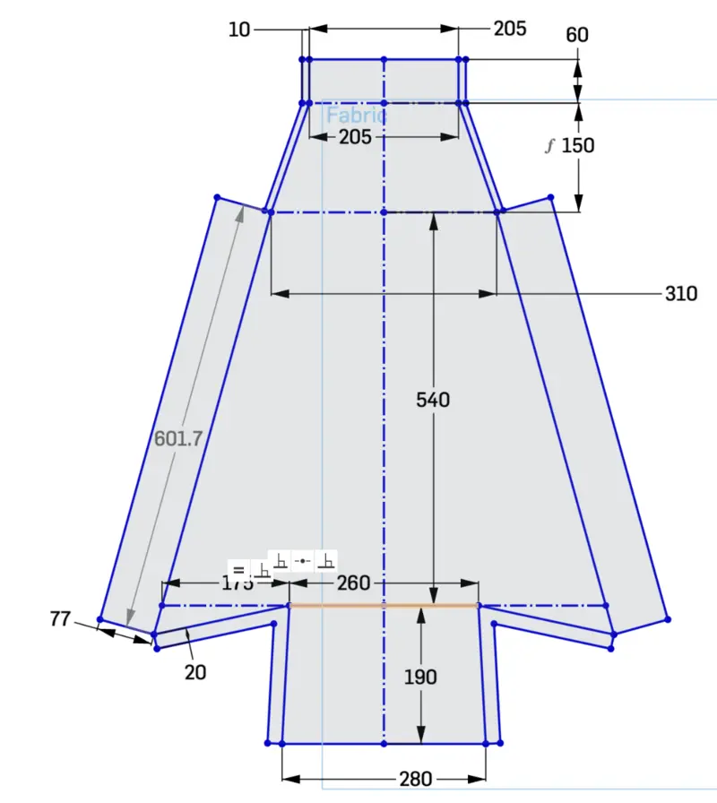
The final version is made from "12oz Heavy Duty Denier Fabric Cordura Canvas Fabric with PVC Backing for Sewing" and seems more than strong enough. It is supported by some plastic at the back - I ended up using some approx 3mm plastic sawed out of a large IKEA storage box.
The 5 point harness and fabric baby actually sits in are taken from a £20 donor buggy from the 90s. This included a zip-on winter sleeping bag bit that has been very useful, along with a sun shade bit that I've yet to work out.
Undoing two bolts allows the whole thing to fold flat:
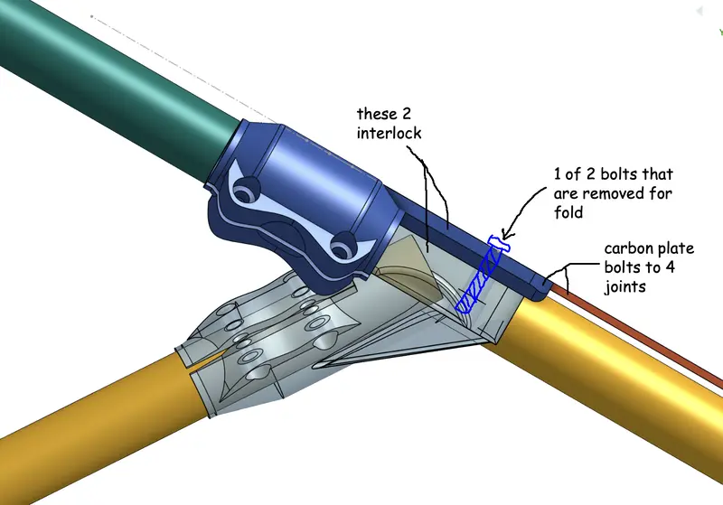
The rear wheels are attached with lynch pins so come off pretty easily.
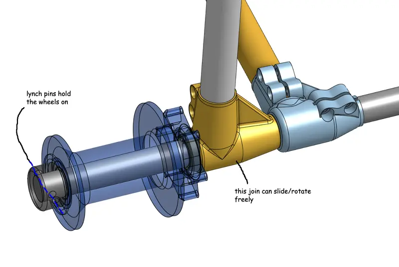
The nicest joint on the buggy is this one, there's two rotating/overlapping/slotted parts that are pretty neat.
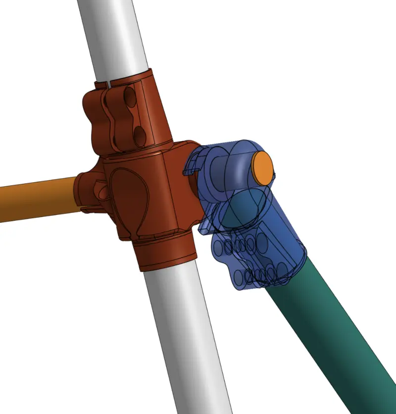
The wheels are AliExpress Brompton rims laced to MTB thru-axle hubs - I had to sand the tubes a bit to get them to slide on.
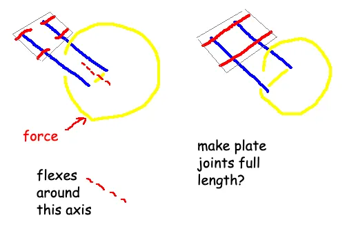
I just bought a thicker carbon plate, but it's pretty heavy and expensive, again, a better design is out there.
The cost was in the low hundreds of pounds. The 3D printing seems cheap as chips when you do your first test joint, but multiplied by 20 joints equals £150 or so. If you just want a buggy, buy a second hand Thule and resell it for near the same price. For what it's worth, I played with an Out n About Nipper in-person and the quality of the materials seemed wack.
We both do a 5km every morning and baby seems pretty happy - result! It was really fun doing the design and build, to the point where I'm tempted to do v2 for a friend. When the prices drop, I may attempt a 3D printed metal glued cargo bike frame à la Atherton Bikes.
If you want any more tips on building your own or want to join me and become the Cervélo of the buggy world - drop us an email (see home page).
Runner's eye view:
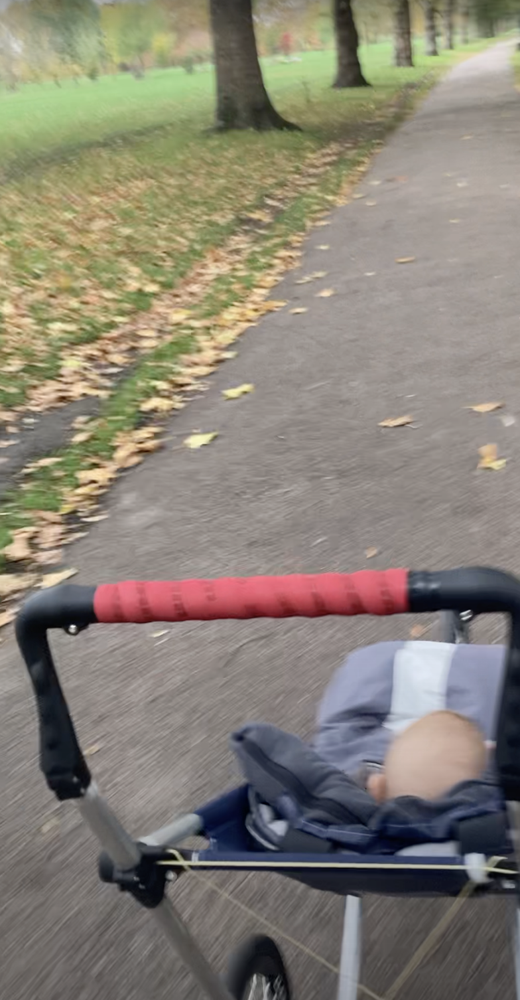